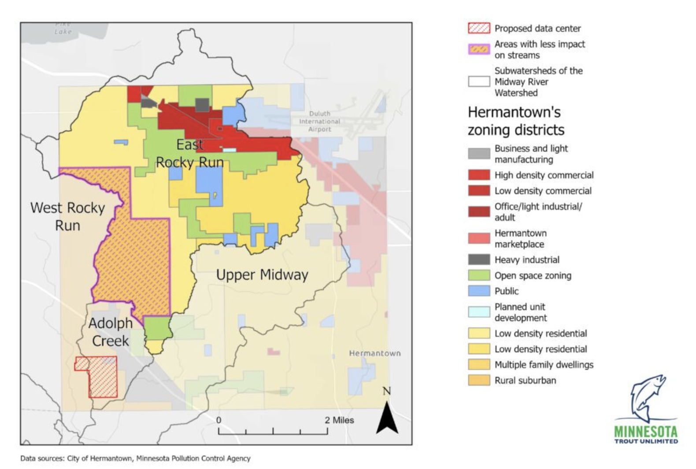
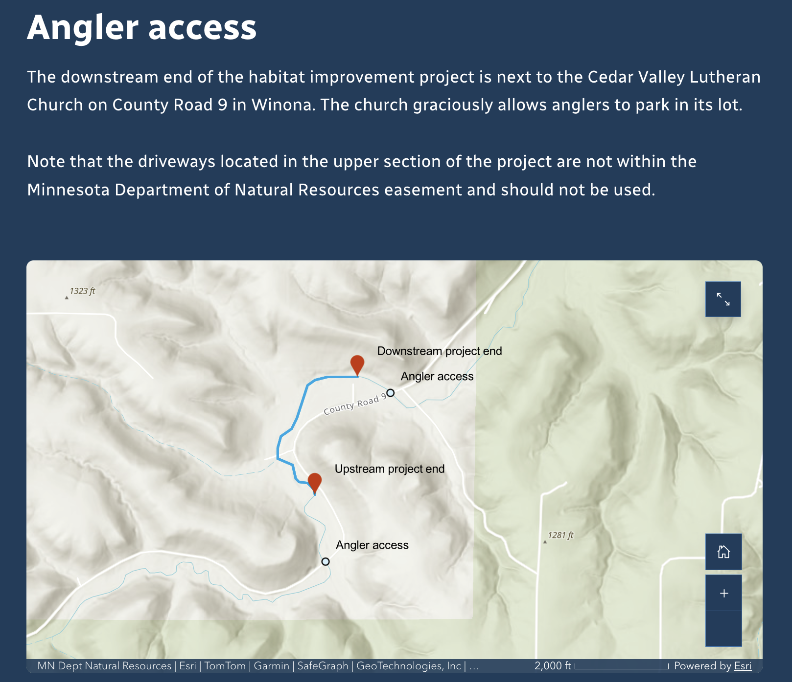
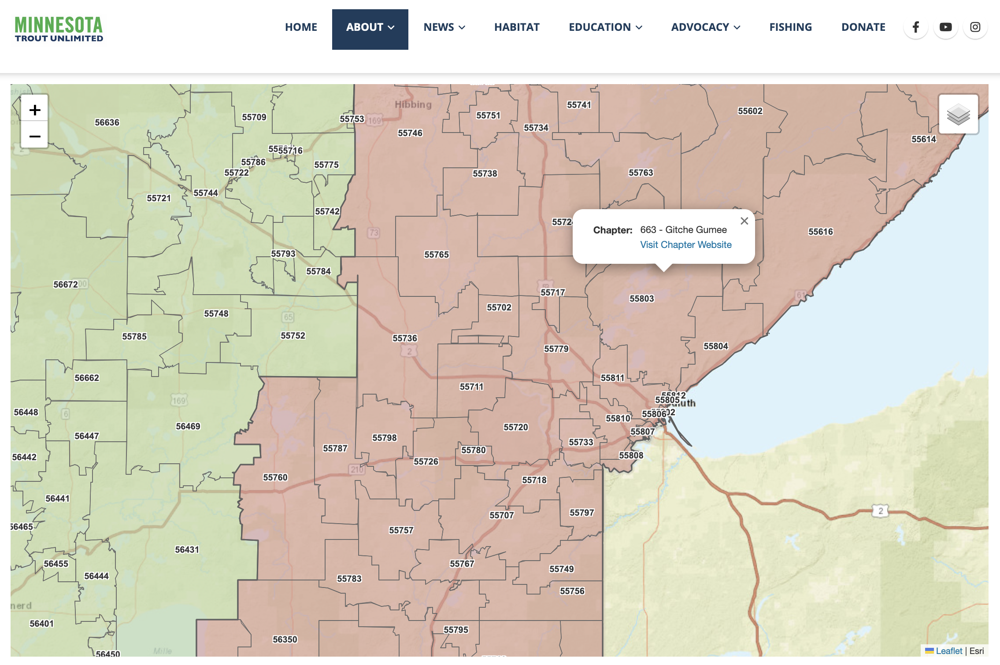

Background
Minnesota Trout Unlimited is a nonprofit organization that works to protect and restore Minnesota’s coldwater fisheries and their watersheds. I volunteer with the organization to assist with web mapping projects.
Work Samples
Midway River Watershed
I created a static web map for an article about a proposed data center in Hermantown, Minnesota .
The map was designed to communicate the risk of the proposed development site and show areas in the watershed that would pose less of a threat to coldwater habitat.

Trout Stream Access Map
I developed an embedded ArcGIS Online map providing information about how anglers can access a restored trout stream.

MNTU Chapters Map
I used geopandas and folium to create an interactive map that helps interested members of the public find the chapter that represents their zipcode .
Users can zoom in to find their zipcode, and select the Chapter for a link to to the Chapter's webpage
